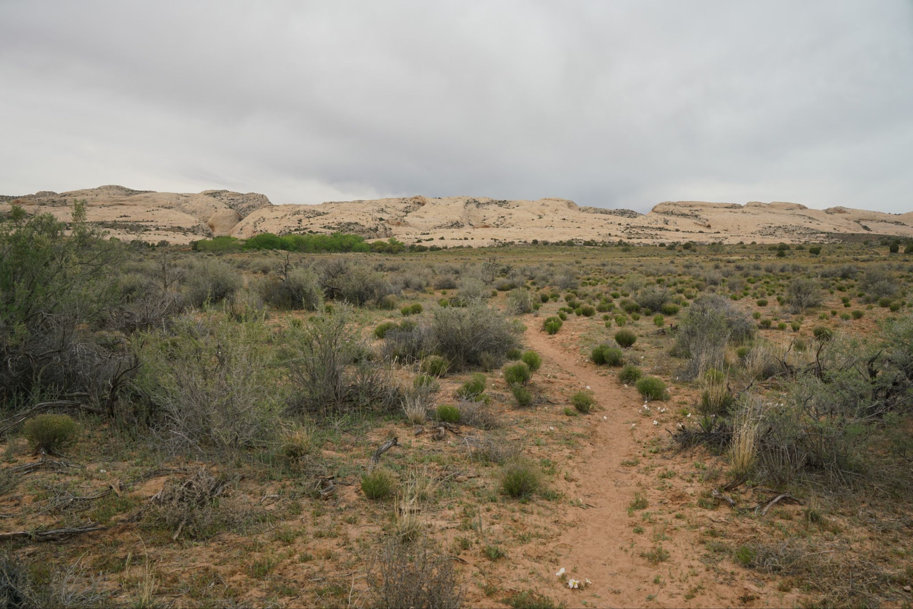
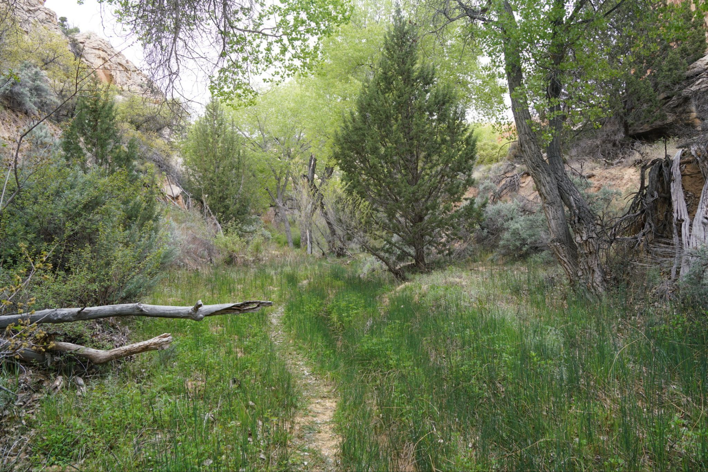
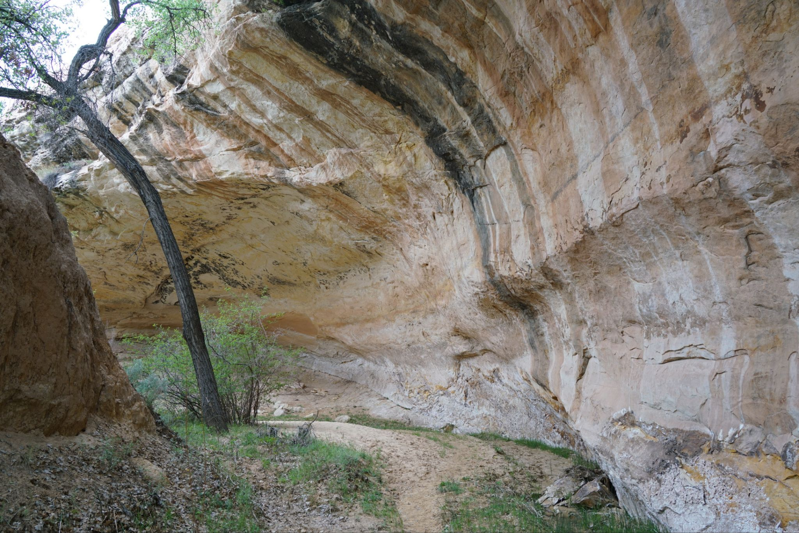
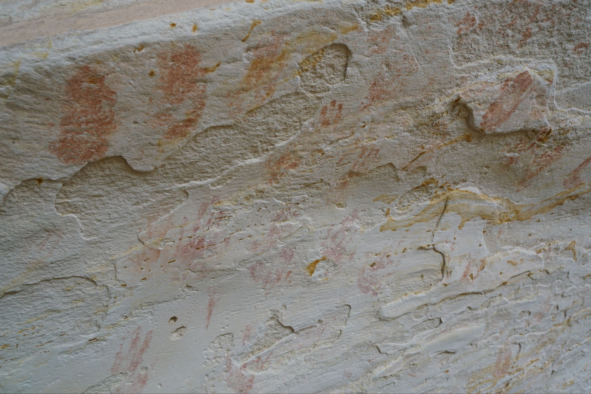
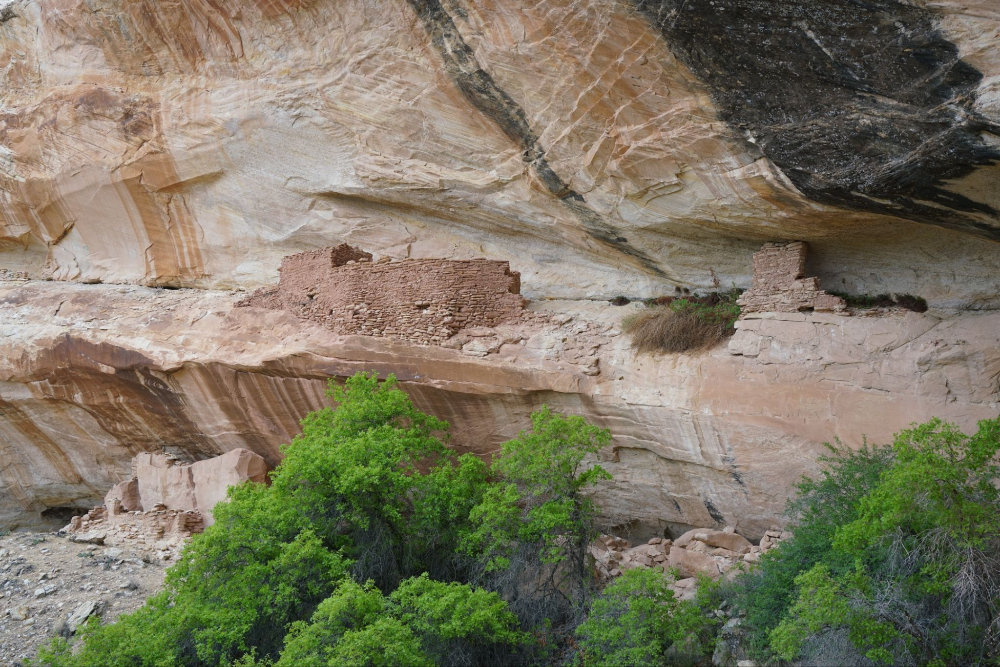
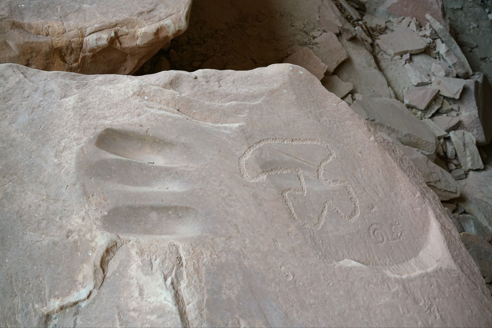
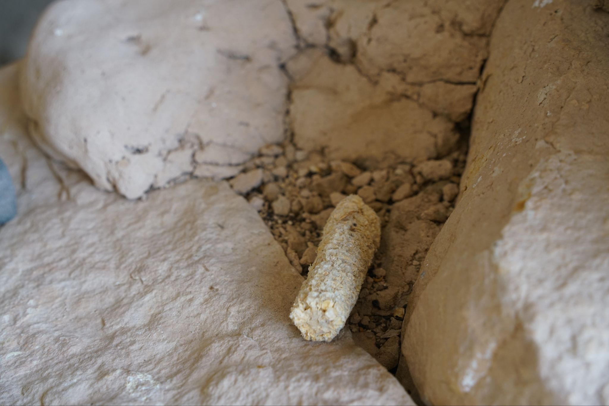
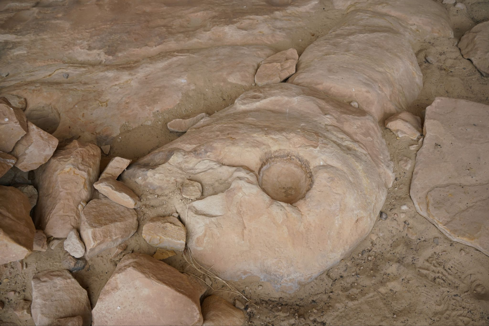
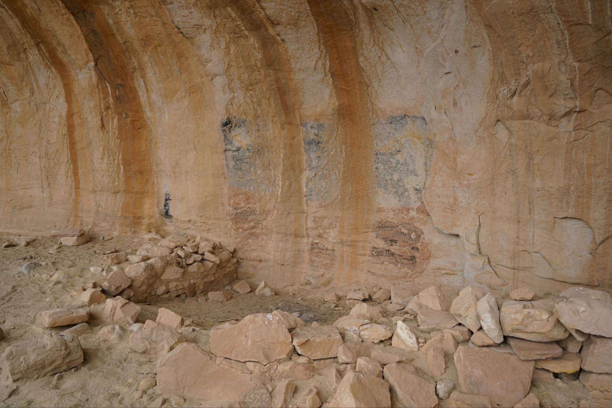
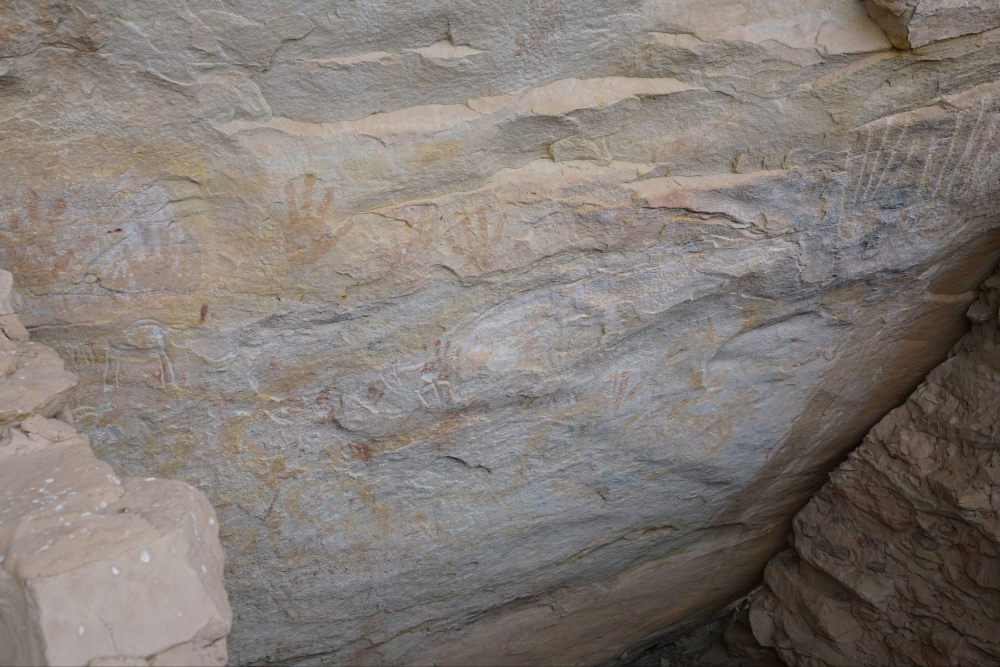

4/6/2026 - Split Level Ruins
Short hike through a small narrowing canyon that opens up to an amphitheater of sorts where there is a series of dwellings in an alcove. There were some petroglyphs, old corn cobs, and many circular depressions carved into stones, probably used to grind food and nuts with metates. Above the dwellings and alcove on a higher ledge was a second set of dwellings but I only looked from a distance as there didn't seem to be a good way up without disturbing the area.









